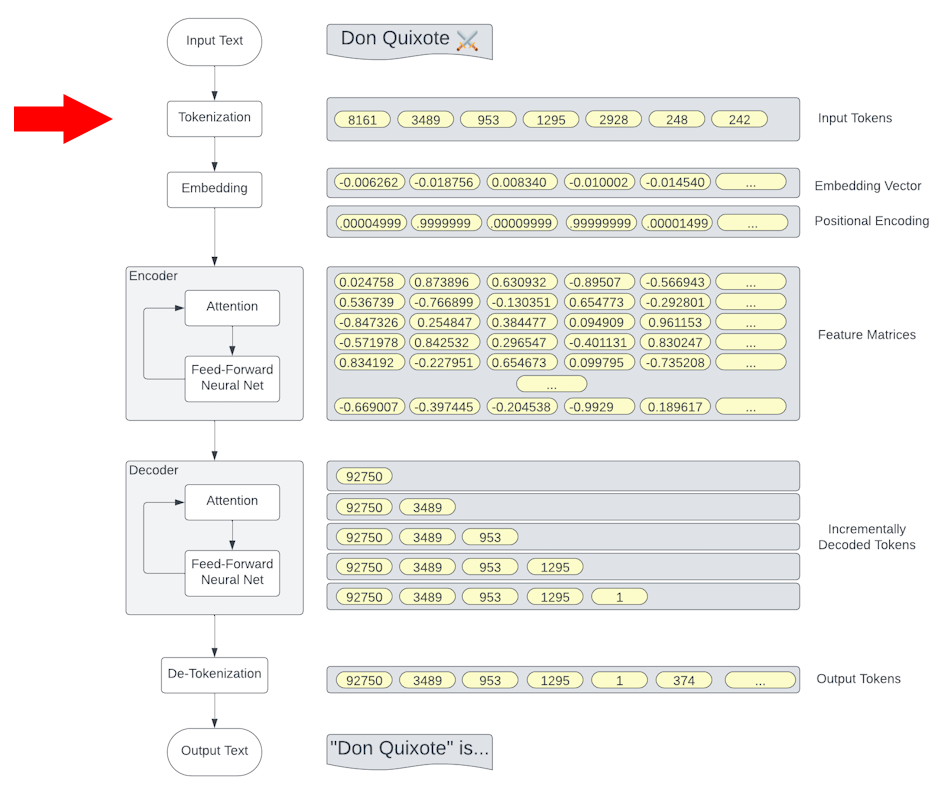
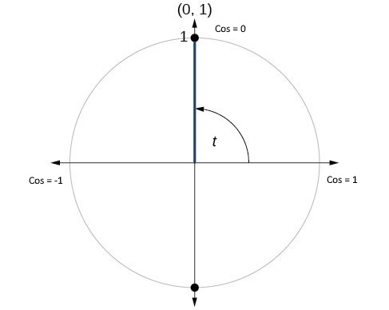

GPT Under the CoversBarry S. StahlSolution Architect & Developer@bsstahl@cognitiveinheritance.comhttps://CognitiveInheritance.com |

|
Favorite Physicists & Mathematicians
Favorite Physicists
Other notables: Stephen Hawking, Edwin Hubble |
Favorite Mathematicians
Other notables: Daphne Koller, Grady Booch, Leonardo Fibonacci, Evelyn Berezin, Benoit Mandelbrot |
Some OSS Projects I Run
- Liquid Victor : Media tracking and aggregation [used to assemble this presentation]
- Prehensile Pony-Tail : A static site generator built in c#
- TestHelperExtensions : A set of extension methods helpful when building unit tests
- Conference Scheduler : A conference schedule optimizer
- IntentBot : A microservices framework for creating conversational bots on top of Bot Framework
- LiquidNun : Library of abstractions and implementations for loosely-coupled applications
- Toastmasters Agenda : A c# library and website for generating agenda's for Toastmasters meetings
- ProtoBuf Data Mapper : A c# library for mapping and transforming ProtoBuf messages
Fediverse Supporter

|
http://GiveCamp.org

Achievement Unlocked

Resume Scanning
|

|
Transformer Architectures
|

|
Transformer (Simplified)

Agenda
|
Tokenization
Tokenization
|

|
GPT Tokenization
|

|
Exploring Tokenization
|
Reference Implementation - AI Demos on GitHub
|

|
Embedding

Embeddings
|

|


Cosine Similarity & Distance
Note: For normalized vectors, cosine similarity is the same as the dot-product |
 |
Cosine Distance

Cosine Distance
Clustering
|

|
Embedding Distance
| Feature | Example |
|---|---|
| Synonym | "Happy" is closer to "Joyful" than to "Sad" |
| Language | "The Queen" is very close to "La Reina" |
| Idiom | "He kicked the bucket" is closer to "He died" than to "He kicked the ball" |
| Sarcasm | "Well, look who's on time" is closer to "Actually Late" than "Actually Early" |
| Homonym | "Bark" (dog sound) is closer to "Howl" than to "Bark" (tree layer) |
| Collocation | "Fast food" is closer to "Junk food" than to "Fast car" |
| Proverb | "The early bird catches the worm" is closer to "Success comes to those who prepare well and put in effort" than to "A bird in the hand is worth two in the bush" |
| Metaphor | "Time is money" is closer to "Don't waste your time" than to "Time flies" |
| Simile | "He is as brave as a lion" is closer to "He is very courageous" than to "He is a lion" |
Attention Blocks

Transformer Blocks
Cosine Distances
|
Resources

|
Discriminative vs Generative
|

|